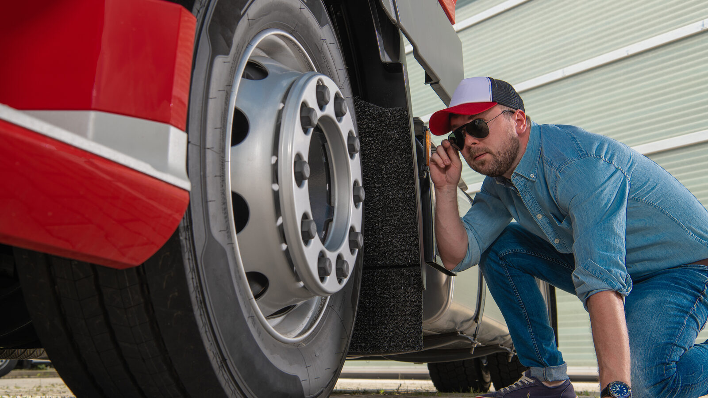

Home / Blog / Underinflation and Your Casings
FLEET STRATEGYLow pressure costs fuel and tread — and it eats the casings an in-house retread line depends on. What the published data says, with every figure attributed.
Published October 5, 2026 · Good Hope Retreaders

Every in-house retread line starts from the same raw material: casings. And the single biggest thing that decides how many of them are worth retreading is something that happens long before they reach your inspection bay — how well they were inflated while they were still on the truck.
That's why pressure data belongs in a conversation about running your own retread line. This guide walks through what published fleet data says about underinflation, what the industry says it does to casings, and what that means for a fleet that wants to own and control its casing supply. We've kept every figure attributed to its source, and where a number comes from a single trade-press quote rather than a study, we say so.
Continental has published results from its fleet tire inspection work in North America. Reporting on that programme says its U.S. and Canada teams have taken air-pressure measurements on more than a million tires, and that its roughly ten-year database of about 2 million data points shows about 39% of steer tires, 34% of drive tires and 33% of trailer tires considered underinflated (Continental newsroom; Tire Review).
Those are one manufacturer's inspection results, not a census of every fleet — and the programme covers fleets that chose to have their tires measured. Still, it's a large dataset, and the takeaway is hard to miss: on a meaningful share of commercial tires in service, pressure is not where it should be.
| Position | Share considered underinflated |
|---|---|
| Steer tires | About 39% |
| Drive tires | About 34% |
| Trailer tires | About 33% |
Source: Continental's ten-year fleet inspection database (about 2 million data points), as reported in the Continental newsroom and trade press.
A tire that runs low flexes more than it was designed to. That extra flexing generates heat, and heat is what fatigues rubber and weakens a casing over time — a mechanism that tire-maintenance trade coverage describes consistently.
On how much life is lost, the figure most often quoted in trade press is that a tire underinflated by 10 psi loses about 15% of its casing life and about 10% of its tread life. That specific number appears in Fleet Maintenance magazine attributed to an industry speaker rather than to a controlled study, so treat it as a rule of thumb, not a measured constant. The direction, though, isn't disputed: low pressure costs you tread life and casing life.
Casing life is the part that matters most to a retread line. The Tire Retread & Repair Information Bureau (TRIB) says that proper inflation, combined with following Industry Recommended Practices, maintains casing integrity through the tire's life — which for a good casing can mean two or three retread cycles. Every one of those cycles is a retread you don't have to buy a new casing to replace.
Pressure isn't only a casing issue. In a Continental study covering 4,000 trips across 10 tractor-trailers over six months, keeping tires within the recommended pressure range improved fuel economy by 4.5%, according to Continental's published results. The ATA's Technology & Maintenance Council has estimated that improper inflation adds roughly $600 to $800 per year in total tire-related cost for each tractor-trailer combination, as cited in coverage of the study.
The small sample (10 trucks) means the 4.5% figure is best read as an illustration of direction and order of magnitude, not a guarantee for any particular fleet. But it shows why pressure management pays on two ledgers at once: fuel now, and casings later.
Everything below is operational reasoning, not a customer result — we're not citing any fleet's savings, because we don't have a sourced number to cite.
None of this requires a particular technology. Gauges, scheduled pressure checks, and — where the fleet's size justifies it — tire pressure monitoring or automatic inflation systems are all tools toward the same end. The point is that a fleet with its own retread line has a reason to treat inflation as a casing-supply issue, not just a roadside-service issue.
If you're considering your own line, a simple casing record kept from day one makes the pressure story visible. At minimum:
Our guide to the five-point casing inspection check covers what to look for at the bench, and the nitrogen inflation piece covers one frequently asked-about pressure-retention option.
Good Hope Retreaders is a manufacturer-direct supplier of retreading equipment, consumables and repair tools with local service in Ontario. We're not a retreader and we don't run shops for customers — what we do is help a fleet equip its own line and keep it supplied. For the casing side of that, that means inspection and preparation equipment such as inspection spreaders and skiving stations, backed by consumables supply you can plan around.
If you're weighing how much volume would justify a line of your own, start with our in-house payback guide. Casing quality is one of the variables in that math.
Tell us your fleet size, tire sizes and weekly retread volume and we'll talk through the equipment and supply picture for your operation — with one transparent all-in Canadian price and local Ontario service.
Talk to us about your line →Send us your requirements and we'll get back to you within 24 hours with pricing and lead times — no obligation.